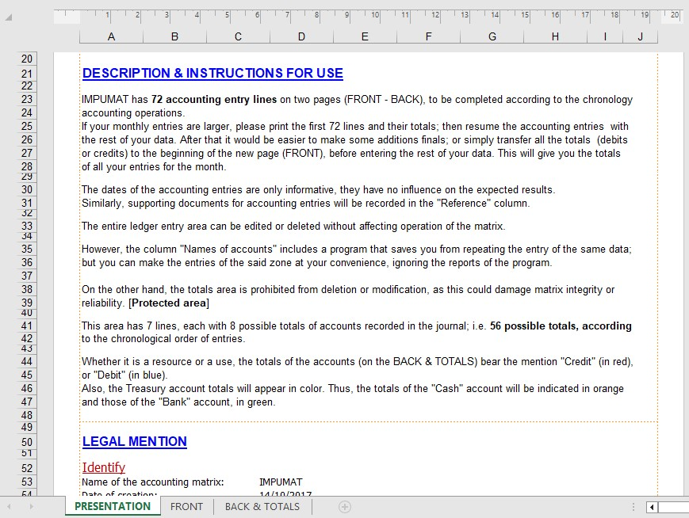

Technical Features and User Guide of the IMPUMAT Matrix
This screenshot illustrates the descriptive section of the IMPUMAT accounting matrix, outlining its technical features and user guide. The matrix allows smooth entry of accounting transactions over two pages while automatically displaying real-time totals of various operating accounts.
With this structured and automated approach, IMPUMAT reduces errors, ensures clearer readability, and simplifies the daily work of accountants and financial managers.
Download IMPUMAT